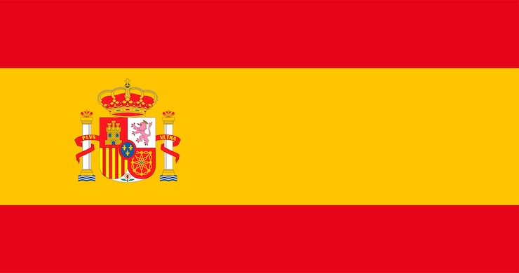

-
nome: "Brasil", vitorias: 5, corcamisa: "amarela"

-
nome: "espanha", vitorias: 1, corcamisa: "vermelha" 
-
nome: "Alemanha", vitorias: 4, corcamisa: "branca"

-
nome: "Itália", vitorias: 4, corcamisa: "azul"
-
nome: "Uruguai", vitorias: 2, corcamisa: "azul celeste"

-
nome: "França", vitorias: 2, corcamisa: "azul"

-
nome: "Argentina", vitorias: 2, corcamisa: "azul"
-
nome: "Inglaterra", vitorias: 1, corcamisa: "branca"